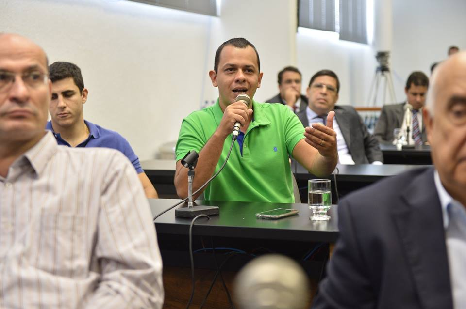

Os Fiscais Agropecuários (FEA) prestigiaram nesta terça (07) o deputado Lissauer Vieira durante audiência pública de instalação da Frente Parlamentar do Agronegócio. Lissauer, que está em sua primeira legislatura foi aclamado por um grupo de FEA que esteve presente na cerimônia.
A audiência pública contou ainda com a presença do Presidente da Agrodefesa, Arthur Toledo e do Presidente da FAEG, José Mário Schreiner, que agradeceram a presença dos Fiscais e destacaram a importância de seu trabalho para o progresso do agronegócio goiano.A participação dos Fiscais teve grande repercussão nas redes sociais e chamou a atenção de jornalistas presentes. Manifestações de apoio ao sindicato chegaram de diversos Estados, o que gerou a expectativa da realização de uma audiência pública para debater a situação atual dos servidores da defesa agropecuária.
"Não vamos conseguir melhorar a vida de 30 mil produtores rurais se
não conseguimos mudar nem mesmo a vida de 600 Fiscais
Agropecuários" destaca o Presidente do Sindicato dos Fiscais
Agropecuários do Estado de Goiás.Discurso
de Leonardo Guimarães na ALEGO
Foto:
Sérgio Rocha